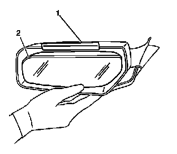
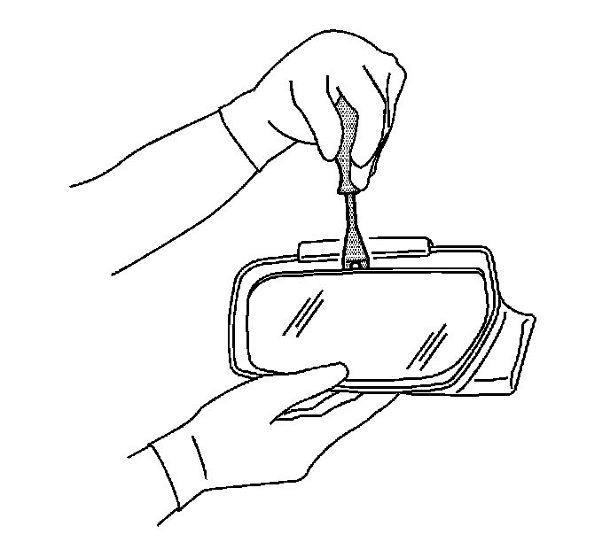
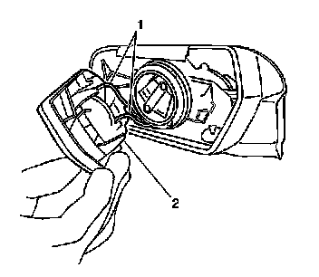
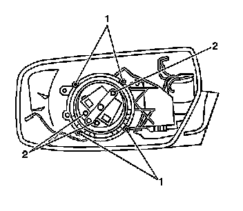
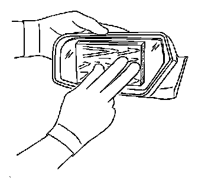

Outside Rearview Mirror Glass Replacement
Outside Rearview Mirror Glass Replacement
Tools Required
J 38778 Door Trim Pad Clip Remover
Removal Procedure
Caution: When working with any type of glass or sheet metal with exposed or rough edges, wear approved safety glasses and gloves in order to reduce the chance of personal injury.

1. Apply several layers of masking tape (1) to the top of the outside rearview mirror housing in order to protect the painted finish.
2. Push the mirror face (2) inward at the bottom of the face until full travel is reached.

3. Remove the mirror face.
1. Retain pressure on the bottom of the mirror face.
2. Insert a J 38778 or the equivalent behind the glass and the first support rib.
3. Pry outward until the mirror face is released.

4. Disconnect the electrical connectors (1).
Installation Procedure
1. Connect the electrical connectors (1).

2. Align the mirror face and backing plate assembly to the retaining tabs (1) on the motor pack.

3. Using a 9 cm (3 in) rubber sanding block placed on the center of the mirror face, apply pressure until an audible click is heard.
4. Inspect the power mirror for proper operation.
5. Remove the masking tape.